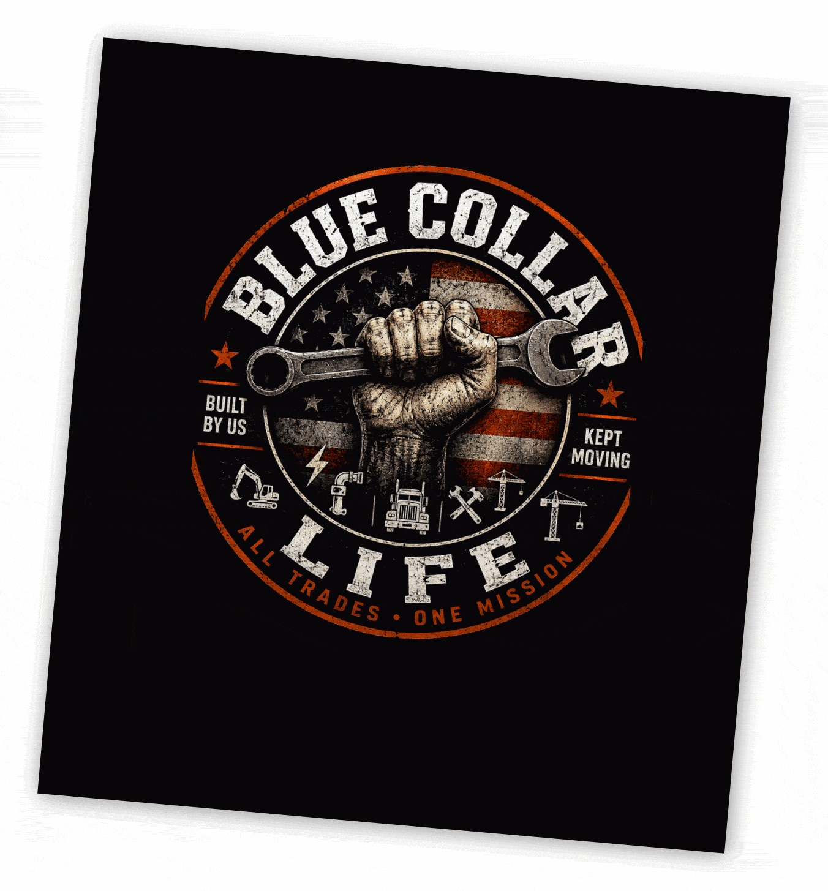

Media Portfolio
This page demonstrates original multimedia content created by Weyland LaBelle, including music, video production, animation, digital artwork, and interactive media.
-
Original Audio Production
"The Guild's Last March" is an original music composition created for my creative projects.
-
Original Video Production
"Sepia Noir" is an original cinematic video project, created for my low-fi youtube channel. It features a unique visual style and original music composition.
-
Animated GIF
Custom animated artwork created as part of this media project. This was the first animated GIF I ever created, and it is a simple example of my animation work, which it utilizes all of my original content.

-
Digital Art Slideshow
A collection of original AI-assisted digital artwork created for music promotion, creative projects, and visual storytelling.

-
Embedded YouTube Video
This embedded YouTube video showcases one of my original creative projects.
-
Layered Digital Artwork Using CSS z-index

-
Embedded Social Media Connections